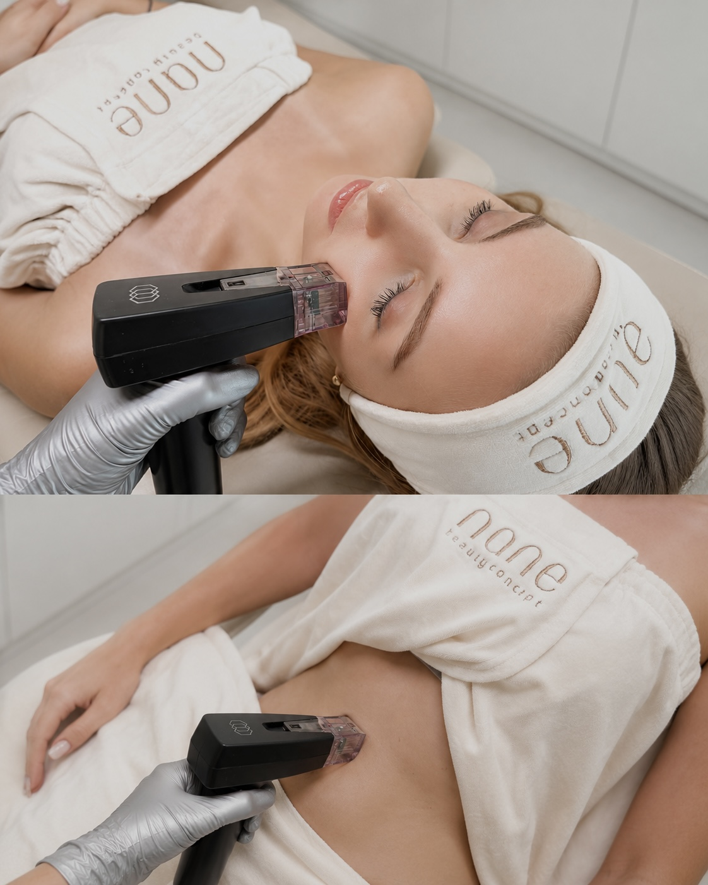
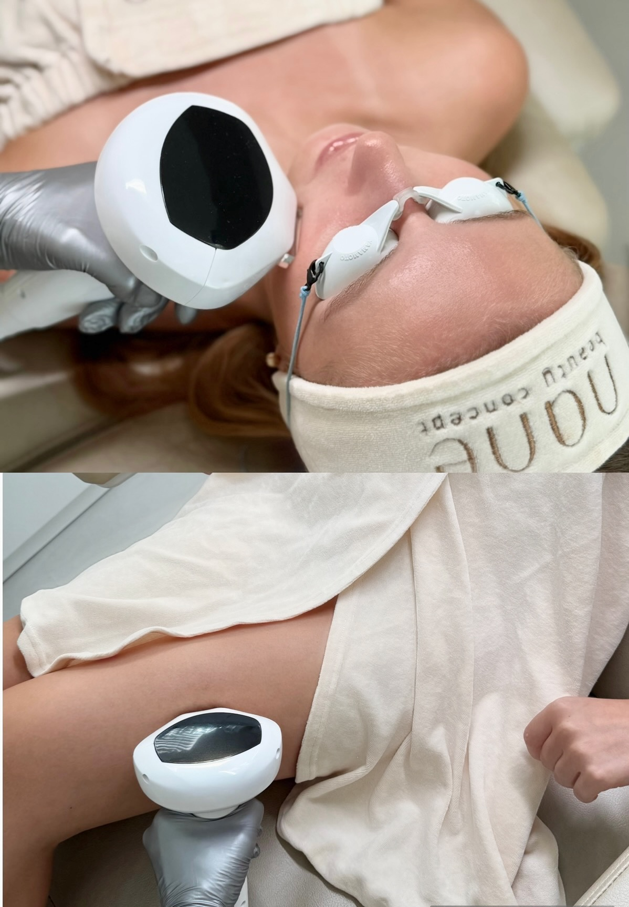
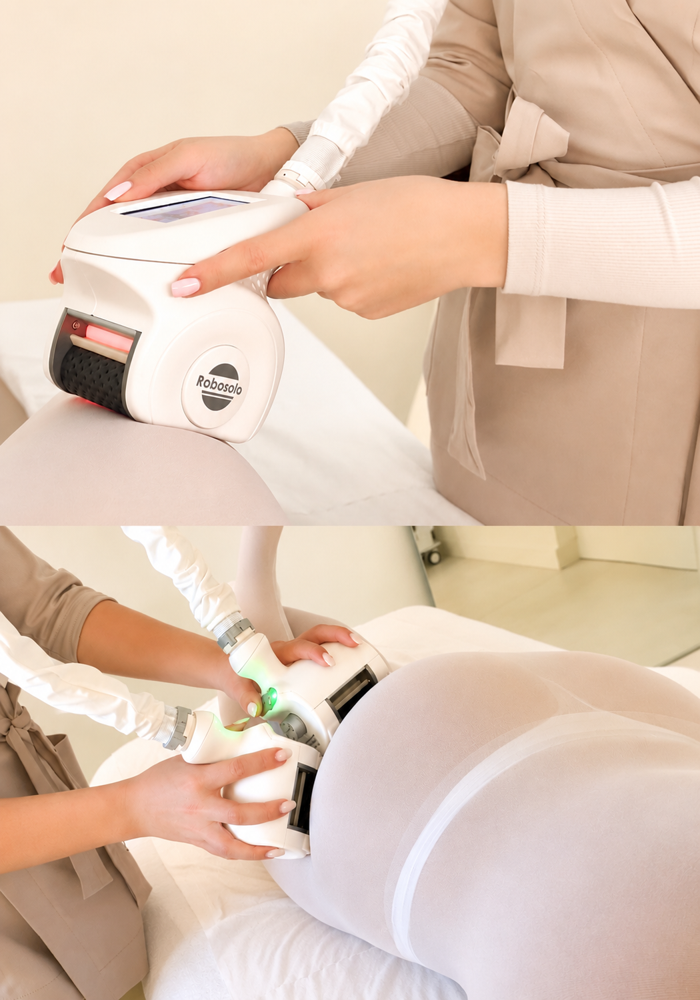
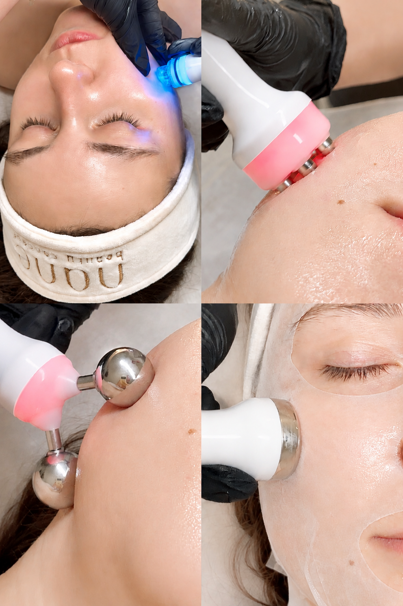
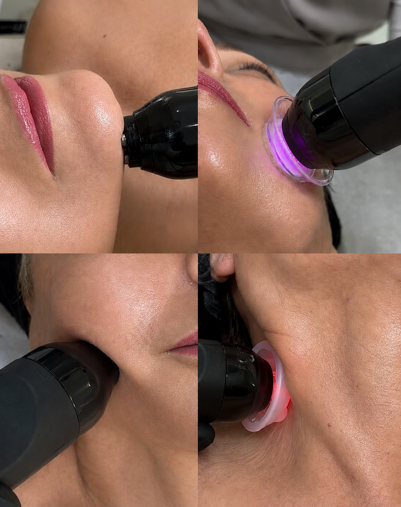
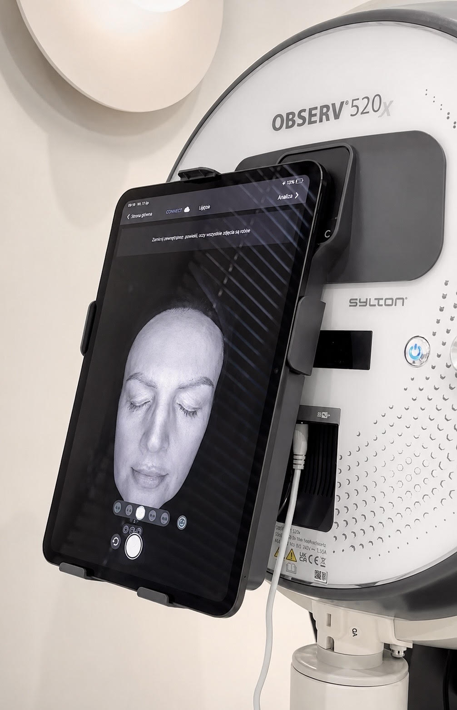
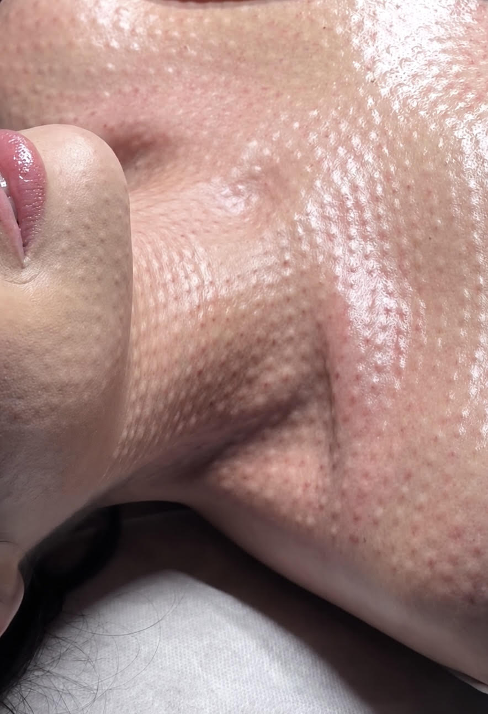
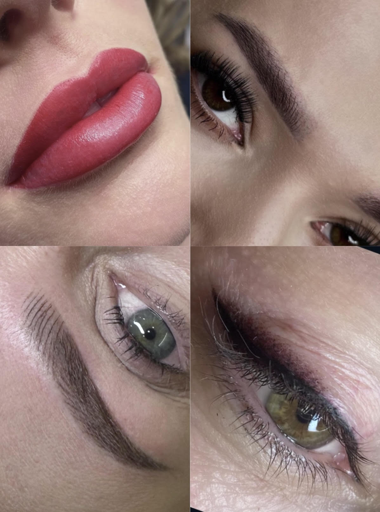
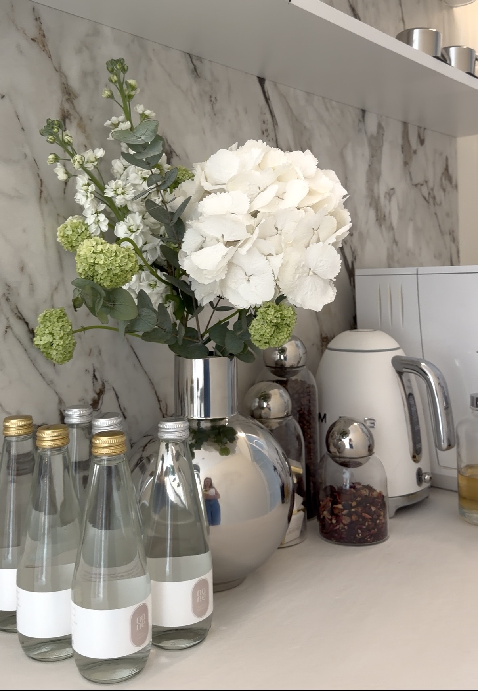

Nasza oferta
Plan dopasowany do Twojej skóry, potrzeb i stylu życia.
Pielęgnacja, kosmetologia i makijaż permanentny w jednym miejscu.
Doświadczenie i sprawdzone procedury kosmetologii estetycznej.
Subtelne rezultaty, które podkreślają Twoje rysy i proporcje.
Uważna obsługa i spokojna atmosfera sprzyjająca wyciszeniu.
Wybrane zabiegi









„Serdecznie polecam każdemu, kto pragnie zadbać o urodę, ale przede wszystkim ceni profesjonalizm, fachowość i komfort. Od lat korzystam i nie oddaję swojej twarzy w inne ręce. Indywidualne podejście, zaangażowanie i świeże spojrzenie na branżę beauty sprawia, że wracam po więcej tylko do Agaty. Tutaj spotykam się z dbałością o każdy detal, doskonałymi efektami zabiegowymi, niezwykle serdeczną atmosferą, troską o komfort i kompleksową opieką. Piękne, przytulne wnętrza gabinetu odzwierciedlają aurę w nim panującą. ✨"
Miejsce stworzone z myślą o Tobie
Jesteśmy gabinetem kosmetologii estetycznej w Rawiczu. Łączymy nowoczesne technologie z indywidualnym podejściem, by każdy zabieg był skuteczny, bezpieczny i komfortowy.
.jpeg)

.jpeg)
Nasza oferta
Wybierz obszar, który Cię interesuje — pokażemy zabiegi i szczegóły dla każdej kategorii.
Cennik zabiegów
Każdy plan zabiegowy zaczynamy od konsultacji — dobieramy technologię i serię do Twojej skóry oraz oczekiwań. Poniżej pełny cennik naszych zabiegów.
Medyczne protokoły pielęgnacji skóry oparte na zaawansowanych składnikach aktywnych — dobierane indywidualnie do potrzeb cery.
Nowoczesna platforma kosmetyczna łącząca dotlenienie, złuszczanie, lifting RF, stymulację mięśniową i wibracyjny drenaż limfatyczny — bez rekonwalescencji, dla każdego typu skóry.
Wieloetapowy rytuał pielęgnacyjny oparty na hydrodermabrazji — oczyszczanie, złuszczanie, nawilżenie i regeneracja skóry w jednym zabiegu.
Technologia intensywnego światła pulsacyjnego — redukuje przebarwienia, zmiany naczyniowe, rumień i oznaki fotostarzenia. Pobudza produkcję kolagenu i poprawia ogólną kondycję skóry.
Indywidualnie dobierane procedury oczyszczające — mycie terapeutyczne, peelingi chemiczne i enzymatyczne, boostery i maski dopasowane do aktualnych potrzeb skóry.
Zaawansowana diagnostyka skóry w 8 trybach światła — ocenia kondycję, problemy i realne potrzeby, w tym niewidoczne gołym okiem. Na podstawie analizy tworzony jest beauty plan i dobierany indywidualny zabieg.
Mikrostymulacja tkanek z technologią laserową i LED — modelowanie sylwetki, redukcja cellulitu i głęboki drenaż limfatyczny. W pakietach nawet ponad 35% taniej.
| Pakiet | Drenaż + 1 focus 30 min |
Drenaż + 2 focusy 40 min |
Drenaż + 3 focusy 50 min |
Drenaż + 4 focusy 60 min |
|---|---|---|---|---|
| 1 zabieg | 250 zł | 300 zł | 350 zł | 400 zł |
| 5 zabiegówcena / zabieg | 1 150 zł230 zł | 1 250 zł250 zł | 1 400 zł280 zł | 1 500 zł300 zł |
| 10 zabiegówcena / zabieg | 2 100 zł210 zł | 2 400 zł240 zł | 2 600 zł260 zł | 2 800 zł280 zł |
| 15 zabiegówcena / zabieg | 2 700 zł180 zł | 3 075 zł205 zł | 3 450 zł230 zł | 3 800 zł253 zł |
Zabieg mikroigłowej radiofrekwencji — działa znacznie głębiej niż inne technologie, stymuluje przebudowę skóry, wygładza zmarszczki, blizny i tkankę tłuszczową, poprawia owal twarzy i ciało.
TwarzDostępne okolice: ramiona z pachami, brzuch przód, brzuch boki, uda przód, uda tył, uda wewnętrzna strona, brzuchy, kolana.
Nici biostymulujące z naturalnego materiału — stymulują produkcję kolagenu i elastyny. Efekt liftingu widoczny natychmiast, wzmacniany przez kolejne tygodnie.
Pierwszy krok do świadomej pielęgnacji skóry. Kosmetolog przeprowadza szczegółowy wywiad, analizuje potrzeby skóry i dobiera indywidualny plan działania.
Nie wiesz, który zabieg wybrać?
Umów konsultację — ocenimy kondycję skóry i zaproponujemy plan dopasowany do Twoich potrzeb i budżetu.
Kosmetologia z sensem i sercem
Jesteśmy studiem kosmetologii estetycznej w Rawiczu. Zabiegi na twarz i ciało łączymy z makijażem permanentnym oraz uważną, w pełni indywidualną opieką.
Każdy plan pielęgnacji tworzymy od nowa — pod potrzeby skóry, oczekiwane efekty i styl życia. Podkreślamy naturalne piękno, nie zmieniając rysów.
Piękno z sensem — naturalne, świadome, dopracowane w każdym detalu.
Nane beauty concept jest nowoczesną koncepcją piękna stworzoną dla osób, które oczekują najwyższej jakości, profesjonalizmu i holistycznej pielęgnacji. To miejsce, w którym nowoczesne technologie, estetyka i ekspercka wiedza tworzą spójną przestrzeń dedykowaną pięknu, zdrowiu skóry i dobremu samopoczuciu.
Każdy zabieg dobieramy indywidualnie, kierując się potrzebami skóry oraz oczekiwaniami naszych klientów. Łączymy skuteczne procedury, najnowocześniejsze technologie oraz wiedzę i doświadczenie naszego zespołu, aby osiągać naturalne, harmonijne i długotrwałe efekty.
Nane Beauty Concept wyróżnia również eleganckie, ciepłe i przyjazne wnętrze, zaprojektowane z dbałością o każdy detal. To przestrzeń, w której profesjonalna opieka, komfort oraz wysoki standard usług tworzą wyjątkowe doświadczenie dla każdego, kto ceni jakość, estetykę i indywidualne podejście.


.jpeg)
.jpeg)

Poznajmy się osobiście
Umów wizytę
Zarezerwuj termin online przez Booksy albo zostaw wiadomość — oddzwonimy i wspólnie dobierzemy najlepszy zabieg.
Wtorek 9:00–17:00
Środa 9:00–17:00
Czwartek 9:00–17:00
Piątek 9:00–17:00
Sobota 9:00–14:00
Niedziela Zamknięte
Formularz kontaktowy
Kosmetologia
i medycyna estetyczna
Zabiegi dopasowane do indywidualnych potrzeb Twojej skóry
Nici zagęszczające
Silna biostymulacja i zagęszczenie skóry — nici uruchamiające naturalną odbudowę kolagenu, bez zmiany rysów twarzy.
Dermapen 4.0
Zaawansowana mezoterapia mikroigłowa pobudzająca naturalną regenerację skóry — efektywna w terapii zmarszczek, blizn, przebarwień i utraty jędrności.
Makijaż permanentny
Naturalne podkreślenie rysów twarzy
Makijaż permanentny to nowoczesna metoda pigmentacji skóry, która pozwala w subtelny i naturalny sposób podkreślić urodę oraz skorygować asymetrie twarzy. Zabieg wykonywany jest precyzyjnymi technikami, które umożliwiają uzyskanie delikatnego, estetycznego efektu bez codziennego malowania.
Idealne rozwiązanie dla osób, które cenią wygodę, oszczędność czasu oraz naturalny, zadbany wygląd przez cały dzień.
Na czym polega makijaż permanentny?
Makijaż permanentny polega na wprowadzeniu pigmentu w powierzchowne warstwy skóry za pomocą specjalistycznego urządzenia. Dzięki temu możliwe jest precyzyjne odtworzenie kształtu i koloru dopasowanego do indywidualnych rysów twarzy.
Efekt jest stopniowy i kontrolowany — pigment dobieramy tak, aby podkreślić naturalne piękno bez przerysowania.
Co obejmuje zabieg?
Podkreślenie kształtu, zagęszczenie oraz korekta asymetrii. Efekt naturalnych, miękkich brwi dopasowanych do twarzy — bez sztuczności.
Delikatne wyrównanie konturu, poprawa symetrii i nadanie koloru, który optycznie poprawia wygląd i świeżość ust.
Podkreślenie oka, zagęszczenie linii rzęs lub subtelna kreska dekoracyjna dopasowana do kształtu oka.
Efekty zabiegu
Efekt utrzymuje się od kilkunastu miesięcy do kilku lat, w zależności od skóry i pielęgnacji.
Jak przebiega zabieg?
Zalecenia pozabiegowe
Po zabiegu może wystąpić delikatne zaczerwienienie i przyciemnienie pigmentu — to naturalny etap gojenia. W okresie regeneracji zaleca się:
Wskazania
Umów się na konsultację
Wspólnie zaplanujemy idealny efekt — kształt, kolor i technikę dopasowane do Twojej urody i oczekiwań.
Pielęgnacja twarzy
Zabiegi dopasowane do indywidualnych potrzeb Twojej skóry
Autorska Terapia Przeciwtrądzikowa
Kompleksowa terapia skóry trądzikowej — redukcja zmian zapalnych, regulacja sebum i regeneracja bariery hydrolipidowej, dopasowana indywidualnie do stopnia nasilenia trądziku.
Autorskie Terapie ZO Skin Health
Indywidualnie dobrane programy zabiegowe na bazie kosmeceutyków ZO Skin Health, wspierające odbudowę prawidłowych funkcji skóry niezależnie od jej rodzaju i problemu.
Autorskie Terapie ProXN
Zaawansowane programy z kompleksem ksantohumolu o silnym działaniu antyoksydacyjnym — odbudowa bariery naskórkowej i stymulacja procesów naprawczych skóry.
Protokoły zabiegowe PCA Skin
Zaawansowane terapie oparte na precyzyjnie dobranych kwasach i składnikach aktywnych — dla skóry trądzikowej, wrażliwej lub z przebarwieniami.
Pielęgnacja ciała
Szczegóły tej oferty są właśnie przygotowywane — wkrótce znajdziesz tu pełen opis zabiegów, ceny oraz zdjęcia efektów.
Umów wizytę →Inne zabiegi
Szczegóły tej oferty są właśnie przygotowywane — wkrótce znajdziesz tu pełen opis zabiegów, ceny oraz zdjęcia efektów.
Umów wizytę →Morpheus8
Technologia, którą pokochały gwiazdy na całym świecie
Morpheus8 to zaawansowany zabieg z zakresu medycyny estetycznej, który łączy mikronakłuwanie skóry z energią fal radiowych (RF). Dzięki temu pobudzamy naturalne procesy regeneracyjne organizmu — następuje poprawa jędrności skóry oraz redukcja oznak starzenia bez konieczności przeprowadzania zabiegów chirurgicznych.
Na czym polega zabieg Morpheus8?
Technologia Morpheus8 wykorzystuje specjalną głowicę wyposażoną w mikroigły, które wprowadzają energię radiofrekwencji do głębokich warstw skóry. Kontrolowane podgrzanie tkanek stymuluje produkcję kolagenu i elastyny — białek odpowiedzialnych za jędrność, elastyczność i młody wygląd skóry.
Połączenie mikronakłuć z działaniem fal radiowych pozwala jednocześnie przebudowywać strukturę skóry i poprawiać jej napięcie, dzięki czemu zabieg cieszy się dużą popularnością wśród osób poszukujących skutecznych metod odmładzania.
Dlaczego pacjenci wybierają Morpheus8?
Morpheus8 wyróżnia się wszechstronnym działaniem i możliwością indywidualnego dopasowania parametrów zabiegowych — to jeden z niewielu zabiegów posiadających certyfikację FDA.
Obszary zabiegowe
Jakich efektów można się spodziewać?
Pierwsze rezultaty często są zauważalne już po jednym zabiegu, jednak pełna przebudowa skóry następuje stopniowo wraz z produkcją nowego kolagenu. W zależności od potrzeb specjalista może zalecić serię od 2 do 4 sesji — dobieraną indywidualnie na podstawie konsultacji i wizyt kontrolnych.
Jak przebiega procedura?
Przygotowanie do zabiegu
Przed planowaną wizytą należy ograniczyć ekspozycję na słońce oraz unikać kosmetyków mogących podrażniać skórę. Szczegółowe zalecenia dotyczące przygotowania i pielęgnacji pozabiegowej omawiane są indywidualnie podczas konsultacji.
Przeciwwskazania
Ostateczna kwalifikacja odbywa się podczas indywidualnej konsultacji ze specjalistą.
Umów się na konsultację
Ocenimy stan skóry i przygotujemy indywidualny plan terapii, który pozwoli osiągnąć oczekiwane rezultaty.
Lumecca IPL
Skuteczna terapia przebarwień, naczynek i oznak fotostarzenia
Lumecca IPL to nowoczesna technologia intensywnego światła pulsacyjnego, stworzona z myślą o poprawie kolorytu skóry i redukcji niedoskonałości naczyniowych oraz pigmentacyjnych. Zabieg pozwala skutecznie zmniejszyć widoczność przebarwień, rumienia, rozszerzonych naczynek oraz oznak starzenia wywołanych promieniowaniem słonecznym — przy krótkim czasie rekonwalescencji i wysokiej skuteczności.
Na czym polega zabieg Lumecca IPL?
Lumecca wykorzystuje energię intensywnego światła pulsacyjnego o wysokiej mocy, które dociera do wybranych struktur w skórze. Światło jest pochłaniane przez melaninę odpowiedzialną za przebarwienia oraz hemoglobinę znajdującą się w naczyniach krwionośnych — w efekcie dochodzi do stopniowego rozjaśnienia zmian pigmentacyjnych i zmniejszenia widoczności zmian naczyniowych.
Dodatkowo zabieg pobudza naturalne procesy regeneracyjne skóry, wspierając jej odnowę i poprawiając ogólną jakość oraz wygląd.
Jak przebiega zabieg Lumecca IPL?
Co dzieje się po zabiegu?
Bezpośrednio po zabiegu może wystąpić przejściowe zaczerwienienie i uczucie ciepła. W przypadku przebarwień często obserwuje się ich chwilowe przyciemnienie — to naturalny etap regeneracji, świadczący o prawidłowej reakcji skóry.
W kolejnych dniach przebarwienia stopniowo się złuszczają, a skóra odzyskuje bardziej jednolity koloryt. Zaczerwienienia i naczynka stają się mniej widoczne wraz z postępującą regeneracją tkanek.
Korzyści Lumecca IPL
Jakich efektów można się spodziewać?
Już po pierwszych zabiegach skóra staje się bardziej promienna i jednolita. Stopniowo zmniejsza się widoczność przebarwień i zmian naczyniowych, a cera odzyskuje świeży i zdrowy wygląd. Dla optymalnych rezultatów zaleca się indywidualnie dobraną serię zabiegów.
Jakie problemy pomaga zniwelować?
Przeciwwskazania
Każdy zabieg poprzedzamy szczegółowym wywiadem i kwalifikacją. Do najważniejszych przeciwwskazań należą:
Zapraszamy na konsultację
Dobierzemy plan terapii dopasowany do potrzeb Twojej skóry i pomożemy odzyskać zdrowy, promienny wygląd.
Icoone
Laser Body
Nowoczesne wsparcie w modelowaniu sylwetki i poprawie kondycji skóry
Icoone Laser Body to innowacyjny zabieg wykorzystujący zaawansowaną technologię masażu mechanicznego wspomaganego podciśnieniem, światłem LED oraz laserem diodowym. Dzięki połączeniu kilku metod stymulacji tkanek możliwe jest skuteczne oddziaływanie na skórę i tkankę podskórną — co pomaga poprawić jej wygląd, napięcie oraz ogólną kondycję.
Na czym polega zabieg Icoone Laser Body?
Technologia Icoone Laser Body opiera się na precyzyjnej mikrostymulacji skóry za pomocą specjalnych głowic wyposażonych w wielootworowe rolki. Zabieg oddziałuje na tkanki w sposób kontrolowany i delikatny, pobudzając mikrokrążenie, procesy regeneracyjne oraz naturalną aktywność fibroblastów odpowiedzialnych za produkcję kolagenu i elastyny.
Dodatkowe wsparcie lasera diodowego 915 nm i światła LED 650 nm pozwala jeszcze skuteczniej wpływać na jakość skóry, wspomagać redukcję miejscowo nagromadzonej tkanki tłuszczowej oraz poprawiać jej napięcie. Dzięki inteligentnym głowicom zabieg działa selektywnie — dociera dokładnie tam, gdzie występuje problem, nie naruszając delikatnych struktur.
Dlaczego warto wybrać Icoone Laser Body?
Zabieg jest bezbolesny, nie powoduje siniaków ani podrażnień i nie wymaga rekonwalescencji. Nie rozciąga skóry — wręcz stymuluje jej ujędrnienie i regenerację.
Jakich efektów można się spodziewać?
Regularnie wykonywane zabiegi pomagają uzyskać gładszą, bardziej napiętą i jednolitą skórę. Terapia wspiera także redukcję cellulitu oraz poprawę konturów sylwetki. Wielu pacjentów zauważa poprawę komfortu i lekkości już po pierwszych sesjach — najlepsze rezultaty osiąga się po ukończeniu indywidualnie dobranej serii zabiegowej.
Zapraszamy na konsultację
Ocenimy potrzeby Twojej skóry i przygotujemy indywidualny plan zabiegowy dopasowany do Twoich celów estetycznych.
Aquapure
Wieloetapowe oczyszczanie i odżywienie skóry dla efektu „glass skin"
Aquapure to nowoczesny zabieg pielęgnacyjny, który łączy oczyszczanie, złuszczanie, nawilżanie i odżywianie skóry w jednej procedurze. Dzięki technologii hydrodermabrazji oraz infuzji składników aktywnych skóra staje się świeża, promienna i wyraźnie bardziej nawilżona już po pierwszej wizycie — bez okresu rekonwalescencji. To jeden z najczęściej wybieranych zabiegów bankietowych.
Na czym polega zabieg Aquapure?
Technologia Aquapure łączy kilka zaawansowanych etapów pielęgnacyjnych, które kompleksowo wpływają na kondycję skóry. Zabieg obejmuje dokładne oczyszczanie i złuszczanie naskórka z wykorzystaniem podciśnienia, a następnie mezoterapię bezigłową wspomagającą transport substancji aktywnych do głębszych warstw skóry.
Kolejnym etapem jest elektrostymulacja, poprawiająca napięcie skóry i pobudzająca mikrokrążenie, oraz termoterapia wspierająca procesy regeneracyjne, zamykająca pory i ułatwiająca wchłanianie składników odżywczych. Dzięki synergii tych technologii skóra jest oczyszczona, intensywnie nawilżona, bardziej napięta i pełna naturalnego blasku.
Dlaczego pacjenci wybierają Aquapure?
Aquapure wyróżnia się połączeniem kilku technologii w jednej procedurze — bez konieczności oddzielnych wizyt i bez okresu rekonwalescencji. Dzięki swojej wszechstronności sprawdza się zarówno jako regularna terapia, jak i zabieg bankietowy przed ważnymi okazjami.
Obszary zabiegowe
Jakich efektów można się spodziewać?
Pierwsze efekty są widoczne bezpośrednio po zabiegu. Dla długotrwałych rezultatów zalecamy indywidualnie dobraną serię.
Jak przebiega procedura?
Cała procedura trwa zazwyczaj 45–60 minut i jest komfortowa dla pacjenta. Po zabiegu można od razu wracać do aktywności — skóra może być delikatnie zaróżowiona, jednak objaw ten szybko ustępuje.
Przeciwwskazania
Kwalifikacja odbywa się podczas indywidualnej konsultacji ze specjalistą.
Umów się na konsultację
Dobierzemy plan terapii dopasowany do potrzeb Twojej skóry i pomożemy uzyskać efekt zdrowej, promiennej cery.
Geneo X
Zabieg dla skóry, która potrzebuje natychmiastowego efektu wow
Geneo X to innowacyjny zabieg kosmetologiczny nowej generacji łączący kilka zaawansowanych technologii w jednej procedurze. Dzięki synergicznemu działaniu dotlenienia skóry, radiofrekwencji, ultradźwięków i elektrostymulacji możliwe jest jednoczesne oczyszczanie, odżywienie, ujędrnienie i rewitalizacja skóry — bez bólu, igieł i okresu rekonwalescencji. Stworzony dla osób, które oczekują szybkiej, widocznej poprawy już po pierwszej wizycie.
Na czym polega zabieg Geneo X?
Geneo X opiera się na opatentowanej technologii OxyGeneo®, która pobudza naturalne procesy dotlenienia skóry od wewnątrz poprzez efekt Bohra. Jednocześnie dochodzi do delikatnego złuszczenia martwego naskórka i przygotowania skóry do przyjęcia składników aktywnych.
W zależności od potrzeb skóry procedura jest wzbogacana o radiofrekwencję TriPollar® RF stymulującą produkcję kolagenu, ultradźwięki wspomagające transport składników aktywnych, elektrostymulację ESA poprawiającą mikrokrążenie i napięcie, a także masaż wibracyjny wspierający drenaż i odżywienie tkanek. Zabieg działa kompleksowo — zarówno na powierzchnię skóry, jak i jej głębsze struktury.
Efekty zabiegu Geneo X
Pierwsze rezultaty widoczne są bezpośrednio po zabiegu. Skóra staje się promienna, napięta i lepiej nawilżona. Zabieg można wykonywać przez cały rok i jest odpowiedni dla większości typów skóry.
Obszary zabiegowe
Jak przebiega procedura?
Cały zabieg trwa zazwyczaj 60–90 minut i nie wymaga rekonwalescencji.
Przeciwwskazania
Kwalifikacja odbywa się podczas indywidualnej konsultacji ze specjalistą.
Umów się na konsultację
Dobierzemy indywidualny plan terapii dopasowany do potrzeb Twojej skóry.
Observ 520x
Opis zabiegu jest w trakcie przygotowania — wkrótce znajdziesz tu szczegółowe informacje, efekty i cennik.
Umów wizytę →Wypełnienie ust
Modelowanie ust kwasem hialuronowym
Modelowanie ust z użyciem kwasu hialuronowego to zabieg, który pozwala subtelnie podkreślić naturalne rysy twarzy, poprawić proporcje ust oraz przywrócić im nawilżenie i świeży wygląd. Efekt nie musi oznaczać dużej zmiany — często chodzi o delikatne odświeżenie i harmonizację konturu.
To jedna z najczęściej wybieranych procedur estetycznych, ponieważ pozwala uzyskać widoczną poprawę wyglądu przy zachowaniu naturalnego efektu.
Jak działa kwas hialuronowy?
Kwas hialuronowy jest substancją naturalnie występującą w organizmie człowieka i odpowiada za wiązanie wody w tkankach, a tym samym za ich nawilżenie i elastyczność.
Podczas zabiegu preparat na jego bazie jest precyzyjnie podawany w czerwień wargową, co pozwala na delikatne zwiększenie objętości ust, poprawę ich kształtu oraz wyrównanie ewentualnych asymetrii. Dzięki właściwościom wiązania wody usta stają się również bardziej nawilżone i wygładzone.
Efekty zabiegu
Efekt jest widoczny bezpośrednio po zabiegu, a jego finalna forma stabilizuje się w kolejnych dniach.
Jak przebiega zabieg?
Całość poprzedzona jest konsultacją, podczas której omawiane są oczekiwania oraz dobierana technika podania preparatu.
Rezultat zabiegu utrzymuje się zazwyczaj od kilku miesięcy do 2 lat — czas ten zależy od indywidualnej pracy organizmu oraz stylu życia. Regularne zabiegi pozwalają na bardziej przewidywalny i długotrwały efekt.
Dla kogo jest ten zabieg?
Efekt dopasowany do Twoich proporcji
Zabieg może być zarówno subtelnym odświeżeniem, jak i bardziej zauważalną zmianą — zawsze dopasowaną do indywidualnych proporcji.
Każdy zabieg poprzedza konsultacja, która pozwala dobrać odpowiednią ilość preparatu oraz technikę modelowania tak, aby efekt był spójny z rysami twarzy i wyglądał naturalnie.
Umów się na konsultację
Jeśli chcesz subtelnie podkreślić usta i poprawić ich proporcje, wspólnie dobierzemy efekt harmonijny i dopasowany do Twojej urody.
Stymulatory tkankowe
Naturalna regeneracja i odmłodzenie skóry
Stymulatory tkankowe to nowoczesne preparaty wykorzystywane w medycynie estetycznej, których celem nie jest natychmiastowe wypełnienie zmarszczek, ale stopniowa poprawa jakości skóry od wewnątrz.
Ich działanie opiera się na intensywnej stymulacji procesów regeneracyjnych, w tym pobudzeniu fibroblastów do produkcji kolagenu i elastyny. Dzięki temu skóra staje się bardziej jędrna, gęsta i elastyczna, a efekt odmłodzenia wygląda naturalnie i harmonijnie.
Na czym polega zabieg?
Stymulatory tkankowe to preparaty zawierające m.in. kwas hialuronowy, peptydy, aminokwasy, polinukleotydy lub kwas polimlekowy. W odróżnieniu od klasycznych wypełniaczy nie zmieniają rysów twarzy ani nie dodają sztucznej objętości — ich zadaniem jest pobudzenie skóry do samoregeneracji i stopniowej odbudowy jej struktury.
Preparat podawany jest w wybrane obszary skóry w formie iniekcji, gdzie rozpoczyna się proces przebudowy i zagęszczenia tkanek.
Efekty zabiegu
Efekty pojawiają się stopniowo i utrzymują się nawet kilka miesięcy po zakończeniu serii zabiegów.
Jak przebiega zabieg?
Zabieg poprzedzony jest konsultacją oraz oceną kondycji skóry, na podstawie której dobierany jest odpowiedni rodzaj stymulatora.
Po zabiegu mogą pojawić się niewielkie depozyty preparatu — to naturalny, przejściowy etap jego działania, który wchłania się samoistnie w krótkim czasie.
Dla kogo?
Efekt, który buduje się od podstaw
To zabieg, który działa stopniowo, ale długofalowo. Zamiast chwilowego efektu daje realną przebudowę skóry i poprawę jej kondycji na poziomie komórkowym.
Dzięki temu skóra staje się nie tylko młodsza wizualnie, ale przede wszystkim zdrowsza i bardziej odporna na procesy starzenia. Każdy zabieg poprzedza konsultacja, podczas której dobierany jest odpowiedni preparat oraz plan terapii dopasowany do indywidualnych potrzeb Twojej skóry.
Umów się na konsultację
Jeśli zależy Ci na naturalnym odmłodzeniu i poprawie jakości skóry bez efektu sztucznego wypełnienia, stymulatory tkankowe mogą być idealnym rozwiązaniem.
Makijaż permanentny
Opis zabiegu jest w trakcie przygotowania — wkrótce znajdziesz tu szczegółowe informacje, efekty i cennik.
Umów wizytę →Autorska Terapia
Przeciwtrądzikowa
Kompleksowe podejście do zdrowej skóry
Autorska Terapia Przeciwtrądzikowa to indywidualnie opracowany program terapeutyczny dla osób zmagających się z różnymi postaciami trądziku. Terapia łączy profesjonalne zabiegi kosmetologiczne z holistycznym podejściem do zdrowia organizmu.
Trądzik nie jest jedynie problemem skóry — bardzo często stanowi sygnał, że w organizmie zachodzą procesy wymagające uwagi. Dlatego terapia nie skupia się wyłącznie na redukcji zmian skórnych, ale również na poszukiwaniu ich przyczyn.
Na czym polega terapia?
Każda terapia rozpoczyna się od szczegółowej konsultacji i analizy skóry. Na tej podstawie opracowujemy indywidualny plan dostosowany do rodzaju trądziku, stopnia nasilenia i potrzeb skóry. W zależności od wskazań terapia może obejmować:
Holistyczne podejście do terapii
Podstawą terapii jest przekonanie, że zdrowa skóra jest odzwierciedleniem prawidłowo funkcjonującego organizmu. W uzasadnionych przypadkach zalecana jest konsultacja holistyczna, pozwalająca jeszcze dokładniej określić przyczyny problemów skórnych.
Efekty terapii
Pierwsze efekty często widoczne są już po pierwszych zabiegach, najlepsze rezultaty przynosi jednak odpowiednio zaplanowana seria i stosowanie zaleceń pozabiegowych.
Wskazania
Umów się na konsultację
Wspólnie opracujemy indywidualny plan terapii — profesjonalne zabiegi i zalecenia dotyczące pielęgnacji oraz codziennych nawyków wspierających zdrowie skóry.
Autorskie Terapie
ZO Skin Health
Profesjonalna pielęgnacja oparta na zdrowiu skóry
Autorskie Terapie ZO Skin Health to indywidualnie dobrane programy zabiegowe oparte na światowej klasy kosmeceutykach marki ZO Skin Health. Łączą zaawansowane protokoły pielęgnacyjne z profesjonalnymi technikami kosmetologicznymi, wspierając odbudowę prawidłowych funkcji skóry.
Każdą terapię dobieramy indywidualnie po analizie potrzeb skóry. Możliwość łączenia różnych protokołów pozwala nam skutecznie wspierać skórę niezależnie od jej rodzaju, wieku i problemu.
Na czym polegają terapie?
Podczas zabiegu wykorzystujemy profesjonalne preparaty ZO Skin Health o wysokim stężeniu substancji aktywnych. Odpowiednio dobrane etapy wspierają regenerację skóry, poprawiają jej funkcje ochronne i wzmacniają efekty pielęgnacji domowej. W zależności od potrzeb terapia może obejmować:
Protokoły zabiegowe
Terapia odświeżająca i regenerująca. Dla cery zmęczonej, szorstkiej i pozbawionej blasku — łączy delikatne złuszczanie z intensywnym nawilżeniem i działaniem kojącym.
Program przeciwstarzeniowy wspierający poprawę jędrności, elastyczności i gęstości skóry. Stymuluje procesy regeneracyjne i pomaga ograniczać oznaki starzenia.
Dla skóry wrażliwej, naczyniowej i skłonnej do zaczerwienień. Łagodzi podrażnienia, wzmacnia barierę ochronną i przywraca komfort skóry.
Intensywnie nawilżający program dla skóry suchej i odwodnionej. Poprawia poziom nawodnienia, elastyczność i miękkość skóry.
Terapia rozjaśniająca dla skóry z przebarwieniami i nierównym kolorytem. Wspomaga wyrównanie odcienia i przywraca naturalny blask.
Program dla skóry trądzikowej, tłustej i mieszanej. Reguluje wydzielanie sebum i wspiera redukcję zmian zapalnych.
Delikatna terapia złuszczająca odpowiednia także dla skóry wrażliwej. Poprawia strukturę, wygładza i przywraca zdrowy wygląd bez okresu rekonwalescencji.
Efekty terapii
Pierwsze rezultaty widoczne są już po jednym zabiegu. Najlepsze efekty uzyskuje się podczas indywidualnie dobranej serii.
Wskazania
Zależą od wybranego protokołu. Kwalifikacja podczas konsultacji.
Umów się na konsultację
Ocenię potrzeby Twojej skóry i dobiorę odpowiedni protokół ZO Skin Health — lub połączę kilka terapii dla jak najlepszych efektów.
Autorskie Terapie
ProXN
Nowoczesna regeneracja i biostymulacja skóry
Autorskie Terapie ProXN to zaawansowane programy oparte na innowacyjnych kosmeceutykach z kompleksem ksantohumolu — jednej z najlepiej przebadanych substancji o silnym działaniu antyoksydacyjnym, przeciwzapalnym i regenerującym.
Filozofia marki opiera się na przywracaniu skórze jej naturalnych funkcji poprzez odbudowę bariery naskórkowej, wzmocnienie systemu antyoksydacyjnego oraz stymulację procesów naprawczych. Każdą terapię dobieramy indywidualnie po konsultacji i analizie potrzeb skóry.
Na czym polegają terapie ProXN?
Stosujemy profesjonalne preparaty o wysokim stężeniu substancji aktywnych, których działanie ukierunkowane jest na regenerację, odbudowę i ochronę skóry przed stresem oksydacyjnym. W zależności od potrzeb terapia może obejmować:
Terapie ProXN
Dla skóry osłabionej, nadreaktywnej i wymagającej regeneracji. Przywraca integralność naskórka i naturalny system antyoksydacyjny. Zalecana po terapiach retinoidami i przed zabiegami z zakresu medycyny estetycznej.
Intensywna poprawa kondycji skóry bez rekonwalescencji. Dla skóry z oznakami fotostarzenia, utratą jędrności, nierównym kolorytem oraz cery zmęczonej — w tym skóry w okresie menopauzy.
Najbardziej zaawansowany protokół ProXN łączący preparaty aktywne z mezoterapią mikroigłową. Dla skóry wymagającej intensywnej przebudowy, zaawansowanego fotostarzenia i utraty gęstości.
Delikatna terapia rozjaśniająca dla skóry wrażliwej, suchej i skłonnej do przebarwień. Redukuje przebarwienia pozapalne, hormonalne i naczyniowe. Uzupełniona indywidualnie dobraną pielęgnacją domową.
Zaawansowany program rozjaśniający dla skóry grubszej, mieszanej i tłustej. Intensywnie wspiera przebudowę naskórka, poprawia strukturę i redukuje przebarwienia oraz oznaki fotostarzenia.
Specjalistyczna terapia dla skóry trądzikowej i problematycznej. Kompleks ksantohumolu z laktoferryną wspiera mikrobom skóry, wycisza stany zapalne, normalizuje odnowę naskórka i reguluje wydzielanie sebum.
Efekty terapii
Przeciwwskazania
Rodzaj przeciwwskazań zależy od wybranego protokołu. Kwalifikacja odbywa się podczas konsultacji.
Umów się na konsultację
Przeprowadzę analizę Twojej skóry i dobiorę odpowiedni protokół ProXN — lub połączę kilka terapii dla jak najlepszych efektów.
Protokoły zabiegowe PCA Skin
Zaawansowane terapie gabinetowe dla każdego rodzaju skóry
Protokoły PCA Skin to zaawansowane terapie gabinetowe oparte na precyzyjnie dobranych kwasach, składnikach aktywnych oraz procedurach wspierających regenerację skóry.
Każdy zabieg rozpoczynamy od analizy skóry i wyboru odpowiedniego programu terapeutycznego. W zależności od potrzeb skóry stosujemy procedury ukierunkowane na konkretne problemy, takie jak trądzik, nadwrażliwość, przebarwienia czy utrata nawilżenia i blasku.
Terapie PCA Skin działają wielopoziomowo — regulują pracę skóry, wspierają jej odnowę komórkową i wzmacniają barierę hydrolipidową.
Protokoły PCA Skin
Advanced Acne & Corrective Therapy
Zaawansowana terapia skóry trądzikowej i problematycznej. Ukierunkowana na redukcję zmian zapalnych, ograniczenie nadprodukcji sebum oraz poprawę struktury skóry. Wspiera oczyszczanie porów i zmniejsza tendencję do powstawania niedoskonałości.
Calming & Hydration Therapy
Terapia kojąca i intensywnie nawilżająca. Dedykowana skórze wrażliwej, reaktywnej i odwodnionej. Przywraca równowagę skóry, redukuje dyskomfort, uczucie ściągnięcia oraz wspiera odbudowę bariery ochronnej.
Brightening & Pigment Therapy
Terapia rozjaśniająca i wyrównująca koloryt skóry. Ukierunkowana na redukcję przebarwień, poprawę jednolitości cery oraz przywrócenie jej naturalnego blasku. Skóra staje się jaśniejsza, bardziej promienna i świeża.
Efekty terapii PCA Skin
Terapie PCA Skin przynoszą widoczne i stopniowo pogłębiające się efekty. Po serii zabiegów skóra staje się:
Indywidualne podejście do skóry
Każdą terapię PCA Skin poprzedzamy szczegółową analizą skóry, która pozwala nam dobrać odpowiedni protokół zabiegowy i zaplanować dalszą pielęgnację.
Kluczowym elementem terapii jest również edukacja w zakresie pielęgnacji domowej, która wspiera i przedłuża efekty zabiegów gabinetowych.
Twoja skóra zaczyna się tutaj
Umów konsultację i razem dobierzemy terapię skrojoną pod potrzeby Twojej skóry.
Nici zagęszczające
Naturalne odmłodzenie, które zaczyna się od odbudowy skóry
Nici zagęszczające to jeden z najbardziej zaawansowanych zabiegów biostymulujących w medycynie estetycznej. Ich działanie można porównać do niezwykle silnych stymulatorów tkankowych — pobudzają skórę do intensywnej regeneracji, odbudowy i produkcji nowego kolagenu, dzięki czemu z czasem staje się ona wyraźnie gęstsza, jędrniejsza i bardziej napięta.
To idealne rozwiązanie dla osób, które chcą odzyskać młodszy wygląd w naturalny sposób, bez efektu przerysowania i zmiany rysów twarzy. Nici nie wypełniają tkanek ani nie maskują oznak starzenia — uruchamiają naturalne procesy naprawcze organizmu, dzięki którym skóra stopniowo odzyskuje swoją jakość, sprężystość i zdrowy blask. Efekty rozwijają się z każdym tygodniem, dając subtelne, eleganckie i długotrwałe odmłodzenie.
Czym są nici zagęszczające?
Nici zagęszczające wykonane są z całkowicie wchłanialnego materiału, który od wielu lat wykorzystywany jest w medycynie. Po wprowadzeniu do skóry tworzą swoiste rusztowanie dla tkanek i inicjują intensywne procesy regeneracyjne. Wokół nici dochodzi do wzmożonej produkcji kolagenu, elastyny oraz kwasu hialuronowego, dzięki czemu skóra staje się grubsza, bardziej napięta i wyraźnie lepszej jakości.
Ich działanie można porównać do zaawansowanych stymulatorów tkankowych — pobudzają naturalne procesy odbudowy skóry, jednak dzięki swojej formie zapewniają jeszcze silniejszą i dłużej utrzymującą się biostymulację.
Dlaczego warto?
Jakie efekty daje zabieg?
Pierwsze efekty widać już po kilku tygodniach, a pełna przebudowa skóry następuje stopniowo wraz z produkcją nowego kolagenu.
Jak wygląda zabieg?
Zabieg rozpoczyna się konsultacją oraz oceną kondycji skóry i oczekiwanych efektów. Procedura trwa zazwyczaj 30–60 minut, w zależności od obszaru zabiegowego.
Po zabiegu może pojawić się niewielki obrzęk, tkliwość lub drobne siniaki, które ustępują samoistnie w ciągu kilku dni. Większość pacjentów szybko wraca do codziennej aktywności.
Jak przygotować się do zabiegu?
Przed zabiegiem odbywa się konsultacja, podczas której oceniany jest stan skóry oraz wykluczane są ewentualne przeciwwskazania. Na kilka dni przed planowaną procedurą warto unikać:
Specjalista przekazuje szczegółowe zalecenia dotyczące pielęgnacji oraz postępowania w okresie regeneracji.
Przeciwwskazania
Mimo że nici zagęszczające są zabiegiem bezpiecznym, istnieją przeciwwskazania do ich wykonania. Każdy pacjent przed zabiegiem przechodzi szczegółowy wywiad, który pozwala ocenić bezpieczeństwo terapii.
Umów się na konsultację
Nici zagęszczające to doskonałe rozwiązanie dla osób, które oczekują naturalnego odmłodzenia i wyraźnej poprawy jakości skóry — dobierzemy odpowiednią terapię i stworzymy indywidualny plan leczenia.
Dermapen 4.0
Zaawansowana mezoterapia mikroigłowa dla przebudowy i regeneracji skóry
Dermapen 4.0 to nowoczesna technologia mezoterapii mikroigłowej, która pozwala na intensywną regenerację, zagęszczenie i odmłodzenie skóry. Zabieg wykorzystuje precyzyjne mikronakłuwanie, dzięki któremu skóra zostaje pobudzona do naturalnych procesów naprawczych, a substancje aktywne wnikają w jej głębsze warstwy.
To jedna z najskuteczniejszych metod poprawy jakości skóry, stosowana w terapii zmarszczek, blizn, przebarwień i utraty jędrności.
Na czym polega zabieg Dermapen 4.0?
Dermapen 4.0 wyposażony jest w system 16 mikroigieł, które wykonują tysiące mikronakłuć na sekundę, tworząc w skórze kontrolowane mikrokanaliki. Proces ten uruchamia intensywną regenerację poprzez stymulację fibroblastów do produkcji kolagenu i elastyny, co prowadzi do zagęszczenia, ujędrnienia i wygładzenia skóry.
Dodatkowo w trakcie zabiegu aplikujemy indywidualnie dobrane koktajle aktywne, które dzięki mikronakłuciom wnikają w głąb skóry i wzmacniają efekt terapii.
Efekty zabiegu
Efekty narastają stopniowo i pogłębiają się w kolejnych tygodniach po zabiegu.
Jak przebiega zabieg?
Zabieg trwa zazwyczaj 30–60 minut. Po procedurze skóra może być zaczerwieniona i delikatnie podrażniona — naturalna reakcja ustępuje w ciągu kilku godzin do kilku dni.
Zalecenia przed zabiegiem
Przeciwwskazania
Przed zabiegiem przeprowadzamy szczegółowy wywiad pozwalający dobrać bezpieczną i indywidualną terapię.
Umów się na konsultację
Dobierzemy terapię i preparaty aktywne dopasowane do potrzeb Twojej skóry.
Oferujemy zabiegi kosmetologii estetycznej w Rawiczu. Nowoczesne zabiegi twarzy i ciała z naturalnym efektem.